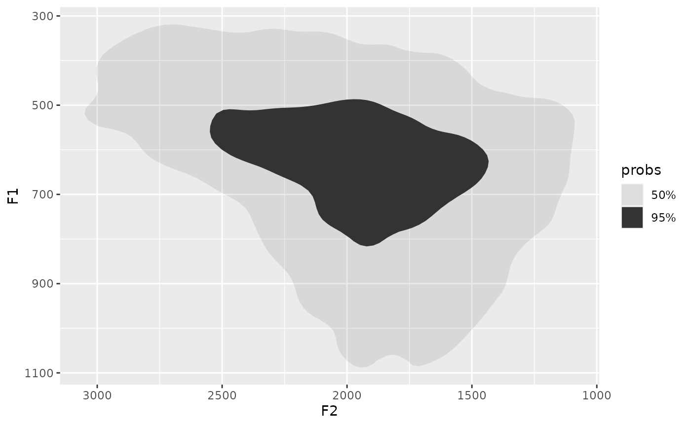
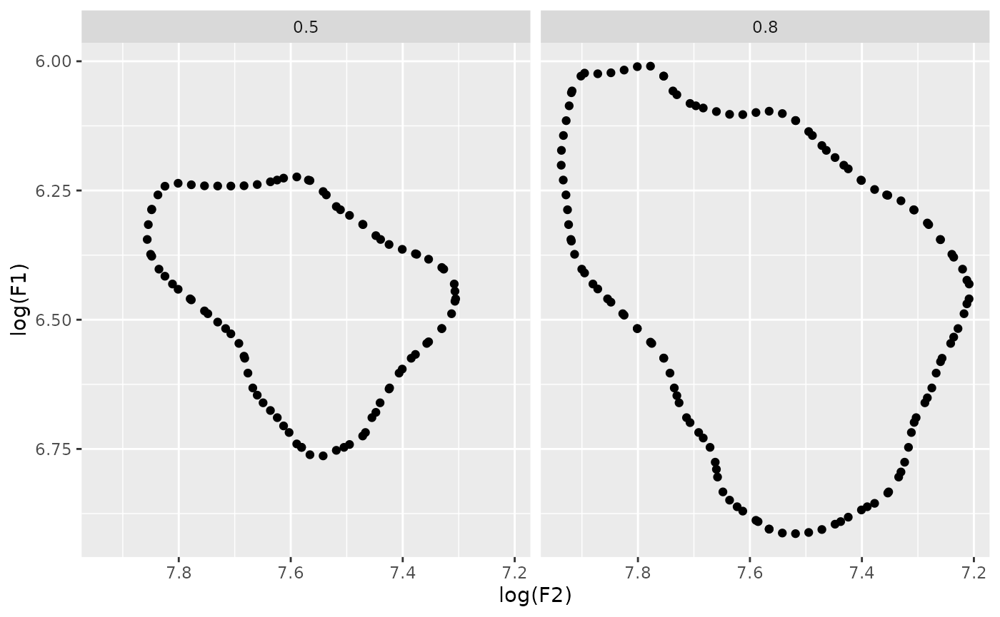

library(densityarea)
library(dplyr)
#>
#> Attaching package: 'dplyr'
#> The following objects are masked from 'package:stats':
#>
#> filter, lag
#> The following objects are masked from 'package:base':
#>
#> intersect, setdiff, setequal, union
library(tidyr)
library(purrr)
library(forcats)
library(sf)
#> Linking to GEOS 3.10.2, GDAL 3.4.1, PROJ 8.2.1; sf_use_s2() is TRUE
library(ggplot2)
library(ggdensity)
data(s01)
head(s01)
#> # A tibble: 6 × 10
#> name age sex word vowel plt_vclass ipa_vclass F1 F2 dur
#> <chr> <chr> <chr> <chr> <chr> <chr> <chr> <dbl> <dbl> <dbl>
#> 1 s01 y f OKAY EY eyF ejF 764. 2088. 0.2
#> 2 s01 y f UM AH uh ʌ 700. 1881. 0.19
#> 3 s01 y f I'M AY ay aj 889. 1934. 0.07
#> 4 s01 y f LIVED IH i ɪ 556. 1530. 0.05
#> 5 s01 y f IN IH i ɪ 612. 2323. 0.06
#> 6 s01 y f COLUMBUS AH @ ə 612. 1904. 0.07
s01 |>
ggplot(
aes(
x = F2,
y = F1
)
)+
stat_hdr(probs = c(0.5, 0.95))+
scale_y_reverse()+
scale_x_reverse()
s01 |>
group_by(name) |>
summarise(
polys = density_polygons(log(F2), log(F1), probs = c(0.5, 0.8), as_sf = F)
) |>
unnest(polys) |>
ggplot(
aes(
`log(F2)`,
`log(F1)`
)
)+
geom_point()+
facet_wrap(~prob)+
scale_x_reverse()+
scale_y_reverse()